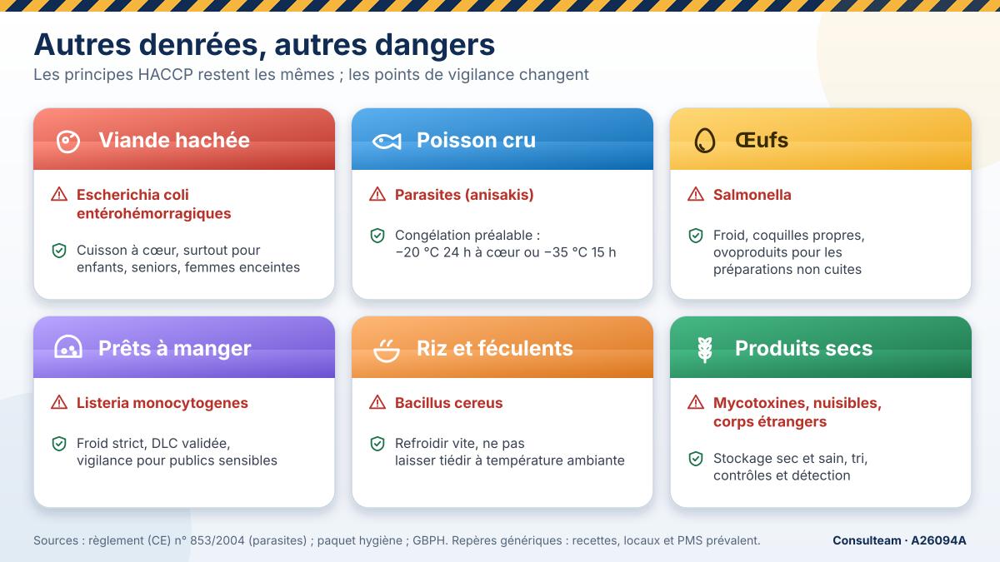

Fiches par famille
Danger : Escherichia coli entérohémorragiques (STEC).
Mesure clé : Cuisson à cœur, notamment pour les enfants, les seniors, les femmes enceintes et les personnes fragiles ; hygiène des manipulations ; chaîne du froid.
Danger : Parasites (anisakidés) ; histamine pour certaines espèces.
Mesure clé : Congélation préalable : au plus −20 °C en tous points pendant au moins 24 h, ou −35 °C pendant au moins 15 h (règlement (CE) n° 853/2004).
Danger : Salmonella.
Mesure clé : Stockage au froid, coquilles propres, ovoproduits pasteurisés pour les préparations non cuites ; séparer coquilles et préparations.
Danger : Listeria monocytogenes (se développe au froid).
Mesure clé : Chaîne du froid stricte, DLC validée, hygiène des surfaces ; vigilance pour les publics sensibles.
Danger : Bacillus cereus.
Mesure clé : Refroidir rapidement, ne pas laisser tiédir à température ambiante, réchauffer à cœur.
Danger : Mycotoxines, nuisibles, corps étrangers, allergènes.
Mesure clé : Stockage sec et sain, rotation des stocks, tri et contrôle à réception, détection des corps étrangers, plan de lutte contre les nuisibles.
Ce qui ne change pas
- Analyser les dangers pour chaque denrée et chaque étape (S03, S06).
- Maîtriser les températures de conservation, de cuisson et de refroidissement (S02).
- Appliquer les bonnes pratiques d’hygiène : mains, surfaces, séparation des flux (S05, S08, S09, S14).
- Enregistrer, vérifier, corriger : PDCA (S07) et traçabilité (S15).
Affichage et information du consommateur
Les quatorze allergènes à déclaration obligatoire sont portés à la connaissance du consommateur (règlement INCO) : étiquette, carte ou affichage selon le mode de vente.
En restauration, l’origine de certaines viandes doit être indiquée selon la réglementation en vigueur. Vérifier les espèces concernées avant d’afficher.
L’eau en contact avec les denrées doit être potable. Réseau public : peu de démarches ; captage privé : contrôle de la qualité à prévoir selon la réglementation.